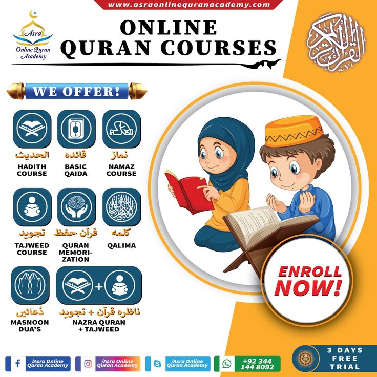

  <body>
    <!-- Offcanvas & Header Menu Begin -->
    {% include 'dashboard_user/layouts/header.html' %}
    {% include 'dashboard_user/layouts/navbar.html' %}
    <!-- Offcanvas & Header Menu End -->
    
    <!-- Sidebar Begin -->
    
    <!-- Main Content Begin -->
    <div class="d-flex" id="wrapper">
          {% include 'dashboard_user/layouts/sidebar.html' %}
        <!-- Sidebar-->
        <!-- Page content wrapper-->
        <div id="page-content-wrapper">
          <!-- Top navigation-->
          <nav class="navbar navbar-expand-lg navbar-light bg-light border-bottom">
            <div class="container-fluid">
              <button class="border-0" id="sidebarToggle"><span class="navbar-toggler-icon"></span></button>
              </button>
            </div>
          </nav>
          <!-- Page content-->
          <div class="container">
            <!-- Breadcrumb Begin -->
            <div class="breadcrumb-section">
              <div class="container">
                <div class="row">
                  <div class="col-lg-12">
                    <div class="breadcrumb__option">
                      <a href="./index.html"><span class="fa fa-home"></span> Home</a>
                      <span>Dashboard</span>
                    </div>
                  </div>
                </div>
              </div>
            </div>
            <!-- Breadcrumb End -->
    
            <!-- Your content goes here -->
            <h2>Selamat Datang Calon Santri/santriwati umulquran</h2>
            <br>
            <h5>Pondok Pesantren Ulumul Qur’an Telah Membuka Pendaftaran Bagi Santri Baru T.A 2024/2025

              INFORMASI PENDAFTARAN SANTRI BARU PONDOK PESANTREN ULUMUL QUR’AN STABAT T.A 2024/2025</h5>
            <br>
            <div class="row">
              <div class="col-sm-12 mb-3 mb-sm-0">
                <div class="card">
                  <div class="card-body">
                    
                  </div>
                </div>
                <div class="container">
                  <h4>1. Tempat Dan Waktu Pendaftaran</h4>
                  <b>a. Tempat Pendaftaran</b>
                  <p>Bertempat di Pesantren Ulumul Qur’an Stabat, JL.KH.Wahid Hasyim, No. 03, Stabat, Kab. Langkat</p>
                  <b>b. Waktu Pendaftaran</b>
                  <p>Tahap 1 : Pada Tanggal 1 Februari s/d 30 Maret 2024</p>
                  <p>Tahap 2 : Pada Tanggal 22 April s/d 30 Juni 2024</p>
                  <p>Pendaftaran di buka dari pukul : 09.00 s/d 15.30 WIB</p>
                  <p>Jika kuota sudah terpenuhi sebelum batas akhir tanggal tersebut di atas, maka penerimaan akan di tutup.</p>
          
                  <h4>2. Persyaratan</h4>
                  <p>a. Calon santri/ah wajib datang bersama orang tua/wali santri</p>
                  <p>b. Menyerahkan fotocopy yang di legalisir</p>
                  <ol>MTs : Ijazah MIN/SD 3 lembar (HARUS TERBACA JELAS)</ol>
                  <ol>MAS : Ijazah MTS/SMP 3 lembar (HARUS TERBACA JELAS)</ol>
                  <p>c. Menyerahkan fotocopy surat keterangan lulus menyusul yang telah dilegalisir sebanyak 3 kali</p>
                  <p>d. Menyerahkan fotocopy akte kelahiran dan fotocopy kartu keluarga 3 lembar</p>
                  <p>e. Surat Keterangan Memiliki NISN ( Nomor Induk Siswa Nasional ) dari sekolah asal/ fotocopy bagian depan raport yang terlampir NISN</p>
                  <p>f. Mengisi Surat Pernyataan</p>
                  <p>g. Biaya Pendaftaran = Rp.250.000,-</p>
                  <p>h. Biaya Pendaftaran Alumni MTs Ulumul Qur’an = Rp. 150.000,-</p>
          
                  <h4>3. Alur Pendaftaran</h4>
                  <p>a. Calon santri/ah mengisi formulir pendaftaran dan melunasi uang masuk dan administrasi pendidikan MTs/MAS sebesar Rp.5.750.000,-</p>
                  <p>b. Khusus santri MTs Ulumul Qur’an yang melanjutkan ke MAS Ulumul Qur’an biaya administrasi pendidikan sebesar Rp.5.350.000,-</p>
                  <p>c. Biaya uang masuk di atas, sudah termasuk biaya bulanan sampai dengan bulan agustus 2024</p>
                  <p>d. biaya bulanan berikutnya mulai dibayarkan pada bulan September 2024 sebesar Rp.950.000,-</p>
          
                  <h4>4. Jadwal Masuk Asrama</h4>
                  <p>Santri Baru (MTs/MAS) masuk asrama pada hari Minggu, 07 Juli 2024. Pukul 08.00 WIB s/d 10.00 WIB ( Acara serah terima santri ke pondok).</p>
          
                  <h4>Tahfidz Murn</h4>
                  <p>Program Tahfidz Murni adalah program khusus menghafal Al-Qur’an tanpa mengikuti kegiatan pembelajaran SKB 3 Menteri.
                      Biaya Masuk : Rp 1.900.000 (sudah termasuk 2 bulan pembayaran ) khusus untuk program ini calon santri bisa mendaftar kapan saja.</p>
              </div>
              </div>
            </div>
          </div>
        </div>
      </div>
      
      <!-- Main Content End -->
    {% include 'dashboard_user/layouts/footer.html' %}
  </body>
</html>
